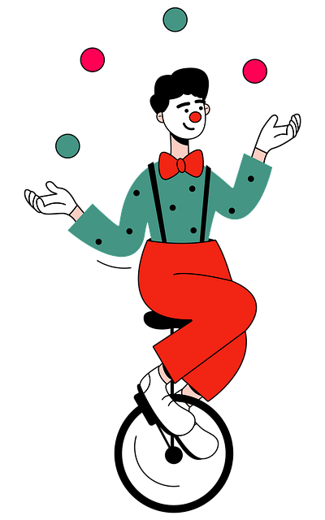

Over the Summer I picked up juggling, which physically changes the brain. In a famous study, beginners who practiced a three-ball cascade for three months showed increased gray matter in parts of the brain that handle visual motion and hand-eye coordination. You can read the original research in Nature.
